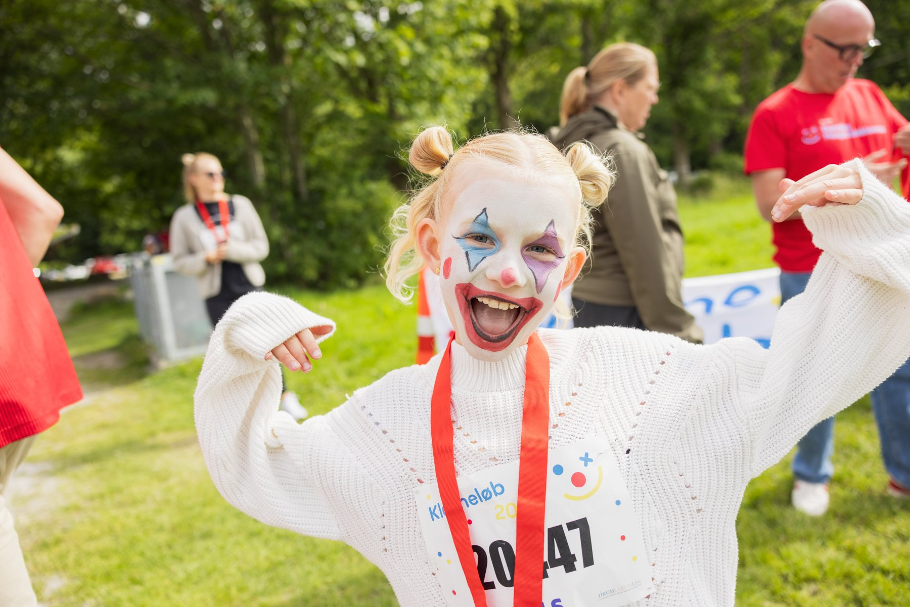

Tirsbæk Stand Klovneløb
Klovneløbet 2026 - kom med til et eventyr fyldt med smil
Lys og Liv glæder os til endnu engang at byde deltagere i alle aldre velkommen til et farverigt og festligt Klovneløb
ved Tirsbæk Strand.
Løbet, hvor vi igen går og løber til fordel for de danske hospitalsklovne🎈
Glæd dig til en uforglemmelig dag i fællesskabets og glædens tegn. Snør løbeskoene, tag dine kollegaer, venner og
familie med og vær med til at støtte Danske Hospitalsklovne, som hver dag spreder håb og latter på landets hospitaler.
Tirsbæk Strand Klovneløb er Vejles nye store velgørende støtte motionsløb. En ny familietradition er født, løbet er
arrangeret af Lys og Liv. Velgørenhedsløbet handler om at gå eller løbe for smil, glæde, fællesskab og for at inspirere
hinanden til at dyrke mere motion, både børn og voksne, alt sammen til fordel for en fælles god sag.
Få mere information om løbet herunder:
Overskrift
beskrivelse her
Vi mangler frivillige til følgende opgaver
Har du mulighed for at birdrage til følgende nedenstående opgaver er du mere end velkommen til at sende os en mail:
- Stå ved salgsboder eller aktiviteter på pladsen
- Stå for mad eller logistik, fx telte og borde, samt mad til de frivillige
- Hjælpe med at udlevere vand, frugt samt medaljer til løbsdeltagerne.